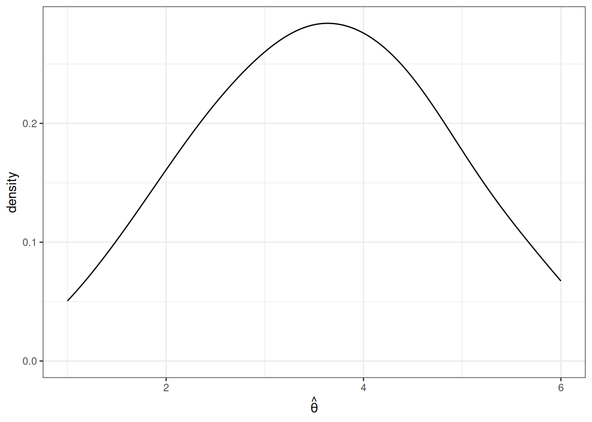
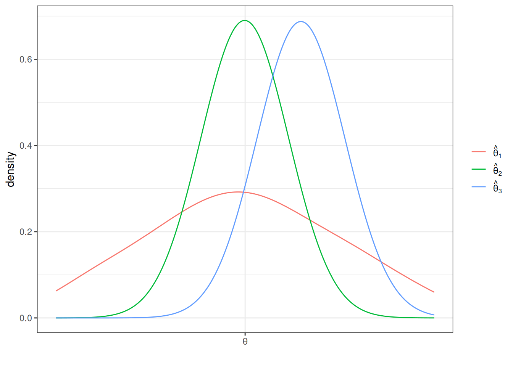

6 Finite Sample Properties
\[ \newcommand{\E}{\mathbb{E}} \renewcommand{\P}{\textrm{P}} \let\L\relax \newcommand{\L}{\textrm{L}} %doesn't work in .qmd, place this command at start of qmd file to use it \newcommand{\F}{\textrm{F}} \newcommand{\var}{\textrm{var}} \newcommand{\cov}{\textrm{cov}} \newcommand{\corr}{\textrm{corr}} \newcommand{\Var}{\mathrm{Var}} \newcommand{\Cov}{\mathrm{Cov}} \newcommand{\Corr}{\mathrm{Corr}} \newcommand{\sd}{\mathrm{sd}} \newcommand{\se}{\mathrm{s.e.}} \newcommand{\T}{T} \newcommand{\indicator}[1]{\mathbb{1}\{#1\}} \newcommand\independent{\perp \!\!\! \perp} \newcommand{\N}{\mathcal{N}} \]
So far, we have been talking about population quantities such as \(f_{Y|X}\) (conditional pdf/pmf), \(\E[Y]\) (expected value of \(Y\)), or \(\E[Y|X]\) (expected value of \(Y\) given \(X\)).
In practice, most often we do not know what these population quantities are equal to (with the exception of some trivial cases like flipping a coin or rolling a die).
A fundamental challenge is that it is uncommon that we observe the entire population.
Instead, we will take the approach that we have access to a sample of data from the original population. We’ll use the sample to try to estimate whatever population quantities we are interested in as well as develop the tools to conduct inference, paying particular interest to questions like: how precisely can we estimate particular population quantities of interest?
The topics considered in this section fall broadly under the topic of statistics (a reasonable definition of statistics is that it is the set of tools to learn about population quantities using data). Some of this material may be familiar from courses that you have taken before, but this section provides a fairly advanced discussion of these issues with a particular eye towards (i) inference issues that are important econometrics and (ii) prediction problems. Many of the tools that we cover in this section will be used throughout the rest of the course.
6.1 Simple Random Sample
SW 2.5
Let’s start by talking about how the data that we have access to is collected. There are several possibilities here, but let us start with the most straightforward case (which is also a very common case) called a simple random sample.
In math: \(\{Y_i\}_{i=1}^n\) is called a simple random sample if \(Y_1, Y_2, \ldots, Y_n\) are independent random variables with a common probability distribution \(f_Y\). The two key conditions here are (i) independence and (ii) from a common distribution. For this reason, you may sometimes see a random sample called an iid sample which stands for independent and identically distributed.
In words: We have access to \(n\) observations that are drawn at random from some underlying population and each observation is equally likely to be drawn.
6.2 Estimating \(\E[Y]\)
SW 2.5, 3.1
Let’s start with trying to estimate \(\E[Y]\) as this is probably the simplest, non-trivial thing that we can estimate.
A natural way to estimate population quantities is with their sample analogue. This is called the analogy principle. This is perhaps technical jargon, but it is the way you would immediately think to estimate \(\E[Y]\):
\[ \hat{\E}[Y] = \frac{1}{n} \sum_{i=1}^n Y_i = \bar{Y} \] In this course, we will typically put a “hat” on estimated quantities. The expression \(\displaystyle \frac{1}{n}\sum_{i=1}^n Y_i\) is just the average value of \(Y\) in our sample. Since we will calculate a ton of averages like this one over the course of the rest of the semester, it’s also convenient to give it a shorthand notation, which is what \(\bar{Y}\) means — it is just the sample average of \(Y\).
One thing that is important to be clear about at this point is that, in general, \(\E[Y] \neq \bar{Y}\). \(\E[Y]\) is a population quantity while \(\bar{Y}\) is a sample quantity. We will hope (and provide some related conditions/discussions below) that \(\bar{Y}\) would be close to \(\E[Y]\), but, in general, they will not be exactly the same.
6.3 Mean of \(\bar{Y}\)
SW 2.5, 3.1
Another important thing to notice about \(\bar{Y}\) is that it is a random variable (as it is the average of random variables). This is in sharp contrast to \(\E[Y]\) which is non-random.
One related thought experiment is the following: if we could repeatedly collect new samples of size \(n\) from the same population and each time were able to estimate \(\bar{Y}\), these estimates would be different from each other.
In fact, this means that \(\bar{Y}\) has a distribution. The distribution of a statistic, like \(\bar{Y}\), is called its sampling distribution. We’d like to know about the features of the sampling distribution. Let’s start with its mean. That is, let’s calculate
\[ \begin{aligned} \E[\bar{Y}] &= \E\left[ \frac{1}{n} \sum_{i=1}^n Y_i \right] \\ &= \frac{1}{n} \E\left[ \sum_{i=1}^n Y_i \right] \\ &= \frac{1}{n} \sum_{i=1}^n \E[Y_i] \\ &= \frac{1}{n} \sum_{i=1}^n \E[Y] \\ &= \frac{1}{n} n \E[Y] \\ &= \E[Y] \end{aligned} \] Let’s think carefully about each step here — the arguments rely heavily on the properties of expectations and summations that we have learned earlier. The first equality holds from the definition of \(\bar{Y}\). The second equality holds because \(1/n\) is a constant and can therefore come out of the expectation. The third equality holds because the expectation can pass through the sum. The fourth equality holds because \(Y_i\) are all from the same distribution which implies that they all of the same mean and that it is equal to \(\E[Y]\). The fifth equality holds because \(\E[Y]\) is a constant and we add it up \(n\) times. And the last equality just cancels the \(n\) in the numerator with the \(n\) in the denominator.
Before moving on, let me make an additional comment:
- The fourth equality might be a little confusing. Certainly it is not saying that all the \(Y_i\)’s are equal to each other. Rather, they come from the same distribution. For example, if you roll a die \(n\) times, you get different outcomes on different rolls, but they are all from the same distribution so that the population expectation of each roll is always 3.5, but you get different realizations on different particular rolls. Another example is if \(Y\) is a person’s income. Again, we are not saying that everyone has the same income, but just that we are thinking of income as being a draw from some distribution — sometimes you get a draw of a person with a very high income; other times you get a draw of a person with a low income, but \(\E[Y]\) is a feature of the underlying distribution itself where these draws come from.
How should interpret the above result? It says that, \(\E[\bar{Y}] = \E[Y]\). This doesn’t mean that \(\bar{Y}\) itself is equal to \(\E[Y]\). Rather, it means that, if we could repeatedly obtain (a huge number of times) new samples of size \(n\) and compute \(\bar{Y}\) each time, the average of \(\bar{Y}\) across repeated samples would be equal to \(\E[Y]\).
6.4 Variance of \(\bar{Y}\)
SW 2.5, 3.1
Next, let’s calculate the variance of \(\bar{Y}\). As before, we are continuing with the thought experiment of being able to repeatedly draw new samples of size \(n\), and, therefore, we call this variance the sampling variance.
\[ \begin{aligned} \Var(\bar{Y}) &= \Var\left(\frac{1}{n} \sum_{i=1}^n Y_i\right) \\ &= \frac{1}{n^2} \Var\left(\sum_{i=1}^n Y_i\right) \\ &= \frac{1}{n^2} \left( \sum_{i=1}^n \Var(Y_i) + \textrm{lots of covariance terms} \right) \\ &= \frac{1}{n^2} \left( \sum_{i=1}^n \Var(Y_i) \right) \\ &= \frac{1}{n^2} \sum_{i=1}^n \Var(Y) \\ &= \frac{1}{n^2} n \Var(Y) \\ &= \frac{\Var(Y)}{n} \end{aligned} \] Let’s go carefully through each step — these arguments rely heavily on the properties of variance that we talked about earlier. The first equality holds by the definition of \(\bar{Y}\). The second equality holds because \(1/n\) is a constant and can come out of the variance after squaring it. The third equality holds because the variance of the sum of random variables is equal to the sum of the variances plus all the covariances between the random variables. In the fourth equality, all of the covariance terms go away — this holds because of random sampling which implies that the \(Y_i\) are all independent which implies that their covariances are equal to 0. The fifth equality holds because all \(Y_i\) are identically distributed so their variances are all the same and equal to \(\Var(Y)\). The sixth equality holds by adding up \(\Var(Y)\) \(n\) times. The last equality holds by canceling the \(n\) in the numerator with one of the \(n\)’s in the denominator.
Interestingly, the variance of \(\bar{Y}\) depends not just on \(\Var(Y)\) but also on \(n\) — the number of observations in the sample. Notice that \(n\) is in the denominator, so the variance of \(\bar{Y}\) will be lower for large values of \(n\). Here is an example that may be helpful for understanding this. Suppose that you are rolling a die. If \(n=1\), then clearly, the variance of \(\bar{Y}\) is just equal to the variance of \(Y\) — sometimes you roll extreme values like \(1\) or \(6\). Now, when you increase \(n\), say, to 10, then these extreme values of \(\bar{Y}\) are substantially less common. For \(\bar{Y}\) to be equal to \(6\) in this case, you’d need to roll 10 \(6\)’s in a row. This illustrates that the sampling variance of \(\bar{Y}\) is decreasing in \(n\). If this is not perfectly clear, we will look at some data soon, and I think that should confirm to you that the variance of \(\bar{Y}\) is decreasing in the sample size.
6.5 Properties of Estimators
SW 2.5, 3.1
Suppose we are interested in some population parameter \(\theta\) — we’ll write this pretty generically now, but it could be \(\E[Y]\) or \(\E[Y|X]\) or really any other population quantity that you’d like to estimate.
Also, suppose that we have access to a random sample of size \(n\) and we have some estimate of \(\theta\) that we’ll call \(\hat{\theta}\).
As before, we are going to consider the repeated sampling thought experiment where we imagine that we could repeatedly obtain new samples of size \(n\) and with each new sample calculate a new \(\hat{\theta}\). Under this thought experiment, \(\hat{\theta}\) would have a sampling distribution. One possibility for what it could look like is the following
In this case, values of \(\hat{\theta}\) are more common around 3 and 4, but it is not highly unusual to get a value of \(\hat{\theta}\) that is around 1 or 2 or 5 or 6 either.
The first property of an estimator that we will take about is called unbiasedness. An estimator \(\hat{\theta}\) is said to be unbiased if \(\E[\hat{\theta}] = \theta\). Alternatively, we can define the bias of an estimator as
\[ \textrm{Bias}(\hat{\theta}) = \E[\hat{\theta}] - \theta \] For example, if \(\textrm{Bias}(\hat{\theta}) > 0\), it means that, on average (in the repeated sampling thought experiment), our estimates of \(\theta\) would be greater than the actual value of \(\theta\).
In general, unbiasedness is a good property for an estimator to have. That being said, we can come up with examples of not-very-good unbiased estimators and good biased estimators, but all-else-equal, it is better for an estimator to be unbiased.
The next property of estimators that we will talk about is their sampling variance. This is just \(\Var(\hat{\theta})\). In general, we would like estimators with low (or 0) bias and low sampling variance. Let me give an example

This is a helpful figure for thinking about the properties of estimators. In this case, \(\hat{\theta}_1\) and \(\hat{\theta}_2\) are both unbiased (because their means are \(\theta\)) while \(\hat{\theta}_3\) is biased — it’s mean is greater than \(\theta\). On the other hand the sampling variance of \(\hat{\theta}_2\) and \(\hat{\theta}_3\) are about the same and both substantially smaller than for \(\hat{\theta}_1\). Clearly, \(\hat{\theta}_2\) is the best estimator of \(\theta\) out of the three. But which is the second best? It is not clear. \(\hat{\theta}_3\) systematically over-estimates \(\theta\), but since the variance is relatively small, the misses are systematic but tend to be relatively small. On the other hand, \(\hat{\theta}_1\) is, on average, equal to \(\theta\), but sometimes the estimate of \(\theta\) could be quite poor due to the large sampling variance.
6.6 Relative Efficiency
SW 3.1
If \(\hat{\theta}_1\) and \(\hat{\theta}_2\) are two unbiased estimators of \(\theta\), then \(\hat{\theta}_1\) is more efficient than \(\hat{\theta}_2\) if \(\Var(\hat{\theta}_1) < \Var(\hat{\theta}_2)\).
Relative efficiency gives us a way to rank unbiased estimators.
6.7 Mean Squared Error
More generally, two estimators can be compared by their mean squared error which is defined as
\[ \textrm{MSE}(\hat{\theta}) := \E\left[ (\hat{\theta} - \theta)^2\right] \]
The mean squared error of \(\hat{\theta}\) is the average “distance” between \(\hat{\theta}\) and \(\theta\) in the thought experiment of having repeated samples of size \(n\).
Another equivalent expression for the mean squared error is
\[ \textrm{MSE}(\hat{\theta}) = \textrm{Bias}(\hat{\theta})^2 + \Var(\hat{\theta}) \] In other words, if we can figure out the bias and variance of \(\hat{\theta}\), then we can recover mean squared error.
Generally, we would like to choose estimators that have low mean squared error (this essentially means that they have low bias and variance). Moreover, mean squared error gives us a way to compare estimators that are potentially biased. [Also, notice that for unbiased estimators, comparing mean squared errors of different estimators just compares their variance (because the bias term is equal to 0), so this is a generalization of relative efficiency from the previous section.]
Example: Let’s compare three estimators of \(\E[Y]\) based on their mean squared error. Let’s consider the three following estimators
\[ \begin{aligned} \hat{\mu} &:= \frac{1}{n} \sum_{i=1}^n Y_i \\ \hat{\mu}_1 &:= Y_1 \\ \hat{\mu}_\lambda &:= \lambda \bar{Y} \quad \textrm{for some } \lambda > 0 \end{aligned} \] \(\hat{\mu}\) is just the sample average of \(Y\)’s that we have already discussed. \(\hat{\mu}_1\) is the (somewhat strange) estimator of \(\E[Y]\) that just uses the first observation in the data (regardless of the sample size). \(\hat{\mu}_\lambda\) is an estimator of \(\E[Y]\) that multiplies \(\bar{Y}\) by some positive constant \(\lambda\).
To calculate the mean squared error of each of these estimators, let’s calculate their means and their variances.
\[ \begin{aligned} \E[\hat{\mu}] &= \E[Y] \\ \E[\hat{\mu}_1] &= \E[Y_1] = \E[Y] \\ \E[\hat{\mu}_\lambda] &= \lambda \E[\bar{Y}] = \lambda \E[Y] \end{aligned} \] This means that \(\hat{\mu}\) and \(\hat{\mu}_1\) are both unbiased. \(\hat{\mu}_\lambda\) is biased (unless \(\lambda=1\) though this is a relatively uninteresting case as it would mean that \(\hat{\mu}_\lambda\) is exactly the same as \(\hat{\mu}\)) with \(\textrm{Bias}(\hat{\mu}_\lambda) = (\lambda - 1) \E[Y]\).
Next, let’s calculate the variance for each estimator
\[ \begin{aligned} \Var(\hat{\mu}) &= \frac{\Var(Y)}{n} \\ \Var(\hat{\mu}_1) &= \Var(Y_1) = \Var(Y) \\ \Var(\hat{\mu}_\lambda) &= \lambda^2 \Var(\bar{Y}) = \lambda^2 \frac{\Var(Y)}{n} \end{aligned} \] This means that we can now calculate mean squared error for each estimator.
\[ \begin{aligned} \textrm{MSE}(\hat{\mu}) &= \frac{\Var{Y}}{n} \\ \textrm{MSE}(\hat{\mu}_1) &= \Var(Y) \\ \textrm{MSE}(\hat{\mu}_\lambda) &= (\lambda-1)^2\E[Y]^2 + \lambda^2 \frac{\Var(Y)}{n} \end{aligned} \] The first thing to notice is that \(\hat{\mu}\) dominates \(\hat{\mu}_1\) (where dominates means that there isn’t any scenario where you could make a reasonable case that \(\hat{\mu}_1\) is a better estimator) because its MSE is strictly lower (they tie only if \(n=1\) when they become the same estimator). This is probably not surprising — \(\hat{\mu}_1\) just throws away a lot of potentially useful information.
The more interesting case is \(\hat{\mu}_\lambda\). The first term is the bias term — it is greater than the bias from \(\hat{\mu}\) or \(\hat{\mu}_1\) because the bias of both of these is equal to 0. However, relative to \(\hat{\mu}\), the variance of \(\hat{\mu}_\lambda\) can be smaller when \(\lambda\) is less than 1. In fact, you can show that there are estimators that have smaller mean squared error than \(\hat{\mu}\) by choosing a \(\lambda\) that is smaller than (usually just slightly smaller than) 1. This sort of estimator would be biased, but are able to compensate introducing some bias by having smaller variance. For now, we won’t talk much about this sort of estimator (and stick to \(\bar{Y}\)), but this sort of estimator has the “flavor” of modern machine learning estimators that typically introduce some bias while reducing variance. One last comment: if you were to make a “bad” choice of \(\lambda\), \(\hat{\mu}_\lambda\) could have higher mean squared error than even \(\hat{\mu}_1\), so if you wanted to proceed this way, you’d have to choose \(\lambda\) with some care.
Side-Comment: I think it is worth quickly explaining where the second expression for \(\textrm{MSE}(\hat{\theta})\) comes from. Starting from the definition of \(\textrm{MSE}(\hat{\theta})\),
\[ \begin{aligned} \textrm{MSE}(\hat{\theta}) &= \E\left[ (\hat{\theta} - \theta)^2\right] \\ &= \E\left[ \left( (\hat{\theta} - \E[\hat{\theta}]) + (\E[\hat{\theta}] - \theta)\right)^2 \right] \\ &= \E\left[ (\hat{\theta} - \E[\hat{\theta}])^2 \right] + \E\left[ (\E[\hat{\theta}] - \theta)^2\right] + 2 \E\left[ (\hat{\theta} - \E[\hat{\theta}])(\E[\hat{\theta}] - \theta) \right] \\ &= \Var(\hat{\theta}) + \textrm{Bias}(\hat{\theta})^2 \end{aligned} \] where the first equality is just the definition of \(\textrm{MSE}(\hat{\theta})\), the second equality adds and subtracts \(\E[\hat{\theta}]\), the third equality squares everything in parentheses from the previous line and pushes the expectation through the sum. For the last equality, the first term in the previous line corresponds to the definition of \(\Var(\hat{\theta})\); for the second term, recall that \(\textrm{Bias}(\hat{\theta}) = \E[\hat{\theta}-\theta]\) (and this is non-random so the outside expectation just goes away); the last term is equal to 0 which just holds by the properties of expectations after noticing that \((\E[\hat{\theta}] - \theta)\) is non-random and can therefore come out of the expectation.